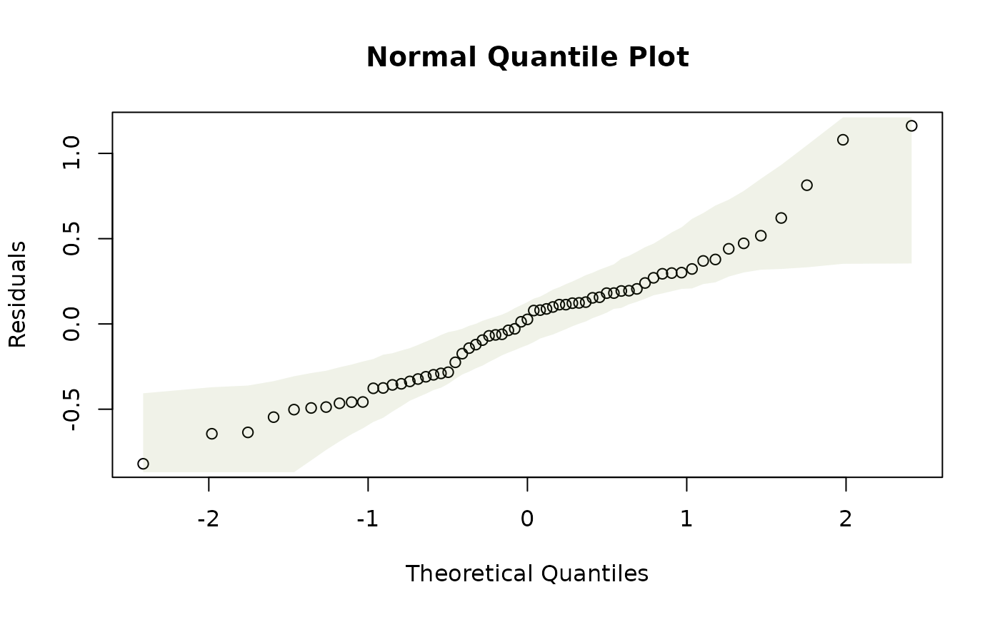

Chapter 8 -- Wiggly Models -- Exercise solutions and Code Boxes
David Warton
2022-08-25
Chapter8Solutions.RmdCode Box 8.1: Fitting a spline smoother to the Mauna Loa annual data of Exercise 8.1 on R.
library(mgcv)
#> Loading required package: nlme
#> This is mgcv 1.8-40. For overview type 'help("mgcv-package")'.
library(ecostats)
#> Loading required package: mvabund
data(maunaloa)
maunaJan = maunaloa[maunaloa$month==1,]
ft_maunagam=gam(co2~s(year), data=maunaJan)
summary(ft_maunagam)
#>
#> Family: gaussian
#> Link function: identity
#>
#> Formula:
#> co2 ~ s(year)
#>
#> Parametric coefficients:
#> Estimate Std. Error t value Pr(>|t|)
#> (Intercept) 356.68048 0.05378 6632 <2e-16 ***
#> ---
#> Signif. codes: 0 '***' 0.001 '**' 0.01 '*' 0.05 '.' 0.1 ' ' 1
#>
#> Approximate significance of smooth terms:
#> edf Ref.df F p-value
#> s(year) 8.427 8.908 33847 <2e-16 ***
#> ---
#> Signif. codes: 0 '***' 0.001 '**' 0.01 '*' 0.05 '.' 0.1 ' ' 1
#>
#> R-sq.(adj) = 1 Deviance explained = 100%
#> GCV = 0.2143 Scale est. = 0.18223 n = 63Code Box 8.2: Residual plot from a GAM of the annual Mauna Loa data of Exercise 8.1
plotenvelope(ft_maunagam)
Do you think assumptions are satisfied?
It generally looks good, although there are a couple of lines of points fanning out on the residuals vs fits plot for co2<320. (The method of taking measurements actually changed in 1974, at about co2=330, so it is possible that this could be artefacts due to changes in the measurement or recording process for data in the 1950’s and 1960’s.)
Note the simulation envelope around the trend line in the residual vs fits plot is hard to see – this is because it falls very close to the horizontal line at zero. This happens because of the way the smoother against year is fitted – it is done in such a way that the residual trend is (nearly) completely removed.
Code Box 8.3: Comparing curves for the Mauna Loa data.
maunaJan$year00 = pmax(2000,maunaJan$year)
ft_maunaPiece = lm(co2~year+year00,data=maunaJan)
ft_maunagam20 = gam(co2~s(year,k=20), data=maunaJan)
summary(ft_maunagam20)$edf # this gam added about 6 extra knots:
#> [1] 15.01983
BIC(ft_maunaPiece,ft_maunagam,ft_maunagam20)
#> df BIC
#> ft_maunaPiece 4.00000 252.2672
#> ft_maunagam 10.42712 104.5190
#> ft_maunagam20 17.01983 104.7728
isTrain = which(maunaJan$year<=2006)
datTrain = maunaJan[isTrain,]
datTest = maunaJan[-isTrain,]
ft_piece = lm(co2~year+year00,dat=datTrain)
ft_gam = gam(co2~s(year),dat=datTrain)
ft_gam20 = gam(co2~s(year,k=20),dat=datTrain)
pr_piece = predict(ft_piece,newdata=datTest)
pr_gam = predict(ft_gam,newdata=datTest)
pr_gam20 = predict(ft_gam20,newdata=datTest)
preds = cbind( predict(ft_piece,newdata=datTest),
predict(ft_gam,newdata=datTest), predict(ft_gam20,newdata=datTest) )
print( apply((datTest$co2-preds)^2,2,sum)) # getting SS by column
#> [1] 233.36905 99.43189 15.72148Exercise 8.2: Eucalypt richness as a function of the environment
How does species richness vary from one area to the next, and what are the main environmental correlates of richness? [Ian] thinks species richness could respond to temperature and rainfall in a non-linear fashion, and may interact. What sort of model should Ian consider using?
He could try a GAM, as in Code Box 8.4. Note that this doesn’t allow him to account for spatial autocorrelation at the same time, maybe he could try gamm as a way forward.
Code Box 8.4: Handling interactions in a GAM, when modelling Ian’s richness data as a function of minimum temperature and rainfall, for Exercise 8.2
data(Myrtaceae)
ft_tmprain=gam(log(richness+1)~te(TMP_MIN,RAIN_ANN),data=Myrtaceae)
vis.gam(ft_tmprain,theta=-135) #rotating the plot to find a nice view
summary(ft_tmprain)$edf
#> [1] 14.89171
ft_tmprain2=gam(log(richness+1)~s(TMP_MIN)+s(RAIN_ANN)+TMP_MIN*RAIN_ANN,
data=Myrtaceae)
summary(ft_tmprain2)
#>
#> Family: gaussian
#> Link function: identity
#>
#> Formula:
#> log(richness + 1) ~ s(TMP_MIN) + s(RAIN_ANN) + TMP_MIN * RAIN_ANN
#>
#> Parametric coefficients:
#> Estimate Std. Error t value Pr(>|t|)
#> (Intercept) 6.970e-02 3.268e-02 2.133 0.0332 *
#> TMP_MIN 2.045e-02 7.029e-02 0.291 0.7712
#> RAIN_ANN 1.333e-03 1.501e-04 8.883 <2e-16 ***
#> TMP_MIN:RAIN_ANN 1.415e-05 4.060e-05 0.348 0.7276
#> ---
#> Signif. codes: 0 '***' 0.001 '**' 0.01 '*' 0.05 '.' 0.1 ' ' 1
#>
#> Approximate significance of smooth terms:
#> edf Ref.df F p-value
#> s(TMP_MIN) 3.945 5.054 2.838 0.0145 *
#> s(RAIN_ANN) 5.295 6.459 9.695 <2e-16 ***
#> ---
#> Signif. codes: 0 '***' 0.001 '**' 0.01 '*' 0.05 '.' 0.1 ' ' 1
#>
#> Rank: 20/22
#> R-sq.(adj) = 0.12 Deviance explained = 12.9%
#> GCV = 0.15261 Scale est. = 0.15076 n = 1000Exercise 8.3: Smoothers for climate effects on plant height
[Angela] would like to know how plant height relates to climate – in particular, are there interactions between predictors, and is the relationship non-linear?
data(globalPlants)
ft_1temprain = gam(log(height)~temp+rain, dat=globalPlants) #linear model
ft_2tempPlusrain = gam(log(height)~poly(temp,2)+poly(rain,2), dat=globalPlants) #quadratic, no interaction
ft_2temprain = gam(log(height)~poly(temp,2)+poly(rain,2)+rain:temp, dat=globalPlants) #quadratic, interactions
ft_stempPlusrain = gam(log(height)~s(temp)+s(rain), dat=globalPlants) #smoother+no interaction
ft_stemprain = gam(log(height)~s(temp)+s(rain)+rain:temp, dat=globalPlants) #smoother+interaction
BIC(ft_1temprain,ft_2tempPlusrain,ft_2temprain,ft_stempPlusrain,ft_stemprain)
#> df BIC
#> ft_1temprain 4.000000 482.6809
#> ft_2tempPlusrain 6.000000 489.5603
#> ft_2temprain 7.000000 494.0549
#> ft_stempPlusrain 4.495239 483.6918
#> ft_stemprain 5.000000 484.6240And the winner is a linear model.
Code Box 8.5: Residual plot with a smoother to diagnose a model.
data(globalPlants)
globalPlants$logHt = log(globalPlants$height)
ft_heightlm = lm(logHt~lat,dat=globalPlants)
plot(ft_heightlm,which=1)
ft_temp = gam(logHt~s(temp), dat=globalPlants)
ecostats::plotenvelope(ft_temp, which=1, main="")Exercise 8.4: Nonlinear predictors of species richness?
Refit the model using smoothers for each environmental variable and compare to a model with additive quadratic terms (assume conditional independence for the moment).
data(Myrtaceae)
Myrtaceae$logrich=log(Myrtaceae$richness+1)
ft_richAdd = lm(logrich~soil+poly(TMP_MAX,degree=2)+
poly(TMP_MIN,degree=2)+poly(RAIN_ANN,degree=2), data=Myrtaceae)
ft_richSmooth = gam(logrich~soil+s(TMP_MAX)+s(TMP_MIN)+s(RAIN_ANN),
data=Myrtaceae)
BIC(ft_richAdd,ft_richSmooth)
#> df BIC
#> ft_richAdd 16.00000 1002.806
#> ft_richSmooth 21.89962 1013.921It looks like the model with additive terms is a better fit.
We could try refitting the model to account for this, using the gamm function in the mgcv package. Do you think this would make any difference to our conclusion? Justify your argument.
I’m not going to try refitting, I don’t think it would make any difference. The main thing that happens if you have spatial structure in your data that you haven’t accounted for is that you get false confidence: standard errors and P-values are too small. In a model selection context, this means that you can end up saying terms should be in the model that you don’t actually need in there, so you end up with an overly complicated model. But in this case, we have already concluded that we don’t need the more complicated model, with the extra smoother terms in it.
Exercise 8.5: Carbon dioxide measurements at Mauna Loa observatory
We would like to model the dataset to characterise the key trends within as well as across years, taking into account that carbon dioxide does not follow a linear trend over time, and that there is a periodic seasonal oscillation… What sort of model would you use?
We can fit an additive model with a smoother for the long-term trend, and harmonics (sin/cos terms) for the seasonal trend.
Code Box 8.7: Residual plots across time and season for the Mauna Loa monthly data
par(mfrow=c(1,2))
plot(residuals(ft_cyclic)~maunaloa$Date,type="l", xlab="Time")
plot(residuals(ft_cyclic)~sin(maunaloa$month/12*2*pi),
type="l",xlab="Season")Here is some code to produce a simulated dataset from this model, for comparison:
maunaloa$simCO2 = unlist(simulate(ft_cyclic))
ft_simCyclic=gam(simCO2~s(DateNum)+sin(month/12*2*pi)+cos(month/12*2*pi),
data=maunaloa)
par(mfrow=c(1,2))
plot(residuals(ft_simCyclic)~maunaloa$Date,type="l", xlab="Time")
plot(residuals(ft_simCyclic)~sin(maunaloa$month/12*2*pi),
type="l",xlab="Season")
Code Box 8.8: Another model for the Mauna Loa monthly data, with an extra sine curve in there to better handle irregularities in the seasonal effect}
Code Box 8.9: Mauna Loa model with autocorrelation}
Exercise 8.6: Mauna Loa monthly data – an extra term in seasonal trend?
We tried modelling the trend by fitting sine curves with two frequencies… Is this sufficient, or should we add another frequency too, like month/12*6*pi (for curves with three cycles a year)?
ft_cyclic3=gam(co2~s(DateNum)+sin(month/12*2*pi)+cos(month/12*2*pi)+
sin(month/12*4*pi)+cos(month/12*4*pi) +
+ sin(month/12*6*pi)+cos(month/12*6*pi), data=maunaloa)
ft_cyclic4=gam(co2~s(DateNum)+sin(month/12*2*pi)+cos(month/12*2*pi)+
sin(month/12*4*pi)+cos(month/12*4*pi) +
+ sin(month/12*6*pi)+cos(month/12*6*pi)+
sin(month/12*8*pi)+cos(month/12*8*pi), data=maunaloa)
par(mfrow=c(1,2))
plot(residuals(ft_cyclic4)~maunaloa$Date,type="l", xlab="Time")
plot(residuals(ft_cyclic4)~sin(maunaloa$month/12*2*pi),
type="l",xlab="Season")
BIC(ft_cyclic,ft_cyclic2,ft_cyclic3,ft_cyclic4)
#> df BIC
#> ft_cyclic 12.85033 1773.254
#> ft_cyclic2 14.93624 1135.151
#> ft_cyclic3 16.93686 1138.438
#> ft_cyclic4 18.93753 1141.922According to BIC, 2 harmonics is the winner, there isn’t much to gain from adding a third or fourth.
Exercise 8.7: Mauna Loa annual data – temporal autocorrelation?}
Consider the annual Mauna Loa monthly data of Code Box 8.1, which uses the measurements from January only… Is there evidence of temporal autocorrelation in this dataset?
maunaJan = maunaloa[maunaloa$month==1,]
ft_gammJan = gamm(co2~s(year),correlation=corAR1(), data=maunaJan)
acf(residuals(ft_gammJan$gam))
ft_gammJan$lme
#> Linear mixed-effects model fit by maximum likelihood
#> Data: strip.offset(mf)
#> Log-likelihood: -51.70909
#> Fixed: y ~ X - 1
#> X(Intercept) Xs(year)Fx1
#> 356.6783 29.9981
#>
#> Random effects:
#> Formula: ~Xr - 1 | g
#> Structure: pdIdnot
#> Xr1 Xr2 Xr3 Xr4 Xr5 Xr6 Xr7 Xr8
#> StdDev: 14.15851 14.15851 14.15851 14.15851 14.15851 14.15851 14.15851 14.15851
#> Residual
#> StdDev: 0.4428823
#>
#> Correlation Structure: AR(1)
#> Formula: ~1 | g
#> Parameter estimate(s):
#> Phi
#> 0.2638297
#> Number of Observations: 63
#> Number of Groups: 1There isn’t really an autocorrelation signal here – the lags represent years now rather than months, and consecutive years (lag 1) have a correlation of less than 0.1 so it looks like not much is happening. The mixed effects model doesn’t really do much here. The estimated autocorrelation is surprisingly large given this (0.26) but it is much smaller than in the monthly analysis (0.76) and decays to negligible levels quickly (correlation at two years is 0.26^2=0.07).
Exercise 8.8: Aspect as a predictor of species richness
Consider Ian’s species richness data… How would you enter aspect into the model? This is a cyclical variable so we would add cos and sin terms to the model.
data(Myrtaceae)
summary(Myrtaceae$aspect)
#> Min. 1st Qu. Median Mean 3rd Qu. Max.
#> 0.0652 91.0725 176.0736 181.5191 271.8024 359.8948It seems to have been entered in degrees so has period 360. Maybe we can consider two harmonics to try to account for non-sinusoidal response. We will keep soil, temperature and rainfall variables from previously:
data(Myrtaceae)
Myrtaceae$logrich=log(Myrtaceae$richness+1)
ft_richAsp = lm(logrich~soil+poly(TMP_MAX,degree=2)+
poly(TMP_MIN,degree=2)+poly(RAIN_ANN,degree=2)+
cos(aspect*2*pi/360)+sin(aspect*2*pi/360)+cos(aspect*4*pi/360)+sin(aspect*4*pi/360),
data=Myrtaceae)
ft_richAdd = lm(logrich~soil+poly(TMP_MAX,degree=2)+
poly(TMP_MIN,degree=2)+poly(RAIN_ANN,degree=2), data=Myrtaceae)
BIC(ft_richAsp,ft_richAdd)
#> df BIC
#> ft_richAsp 20 1026.860
#> ft_richAdd 16 1002.806It looks like there isn’t really an aspect signal in the data, BIC is much smaller without any aspect terms being in the model.
Recall that species richness had some spatial structure to it. Refit the model using the gls function from the nlme package to account for spatially structured correlation. Did this change your inferences about aspect in any appreciable way?
Well it won’t change our inferences because ignoring spatial correlation risks giving you false confidence in the importance of terms, but we already decided that aspect is not important. But anyway. We decided last time around that an exponential model with a nugget effect did OK:
This code chunk is not run, because it will take several minutes:
library(nlme)
ft_richNugg = gls(logrich~soil+poly(TMP_MAX,degree=2)+poly(TMP_MIN,degree=2)+
poly(RAIN_ANN,degree=2),data=Myrtaceae,
correlation=corExp(form=~X+Y,nugget=TRUE))
ft_richAspNugg = gls(logrich~soil+poly(TMP_MAX,degree=2)+poly(TMP_MIN,degree=2)+
poly(RAIN_ANN,degree=2)+ cos(aspect*2*pi/360)+sin(aspect*2*pi/360)+cos(aspect*4*pi/360)+sin(aspect*4*pi/360),data=Myrtaceae,
correlation=corExp(form=~X+Y,nugget=TRUE))
BIC(ft_richNugg)
BIC(ft_richAspNugg)As expected, this did not change inference in any appreciable way!